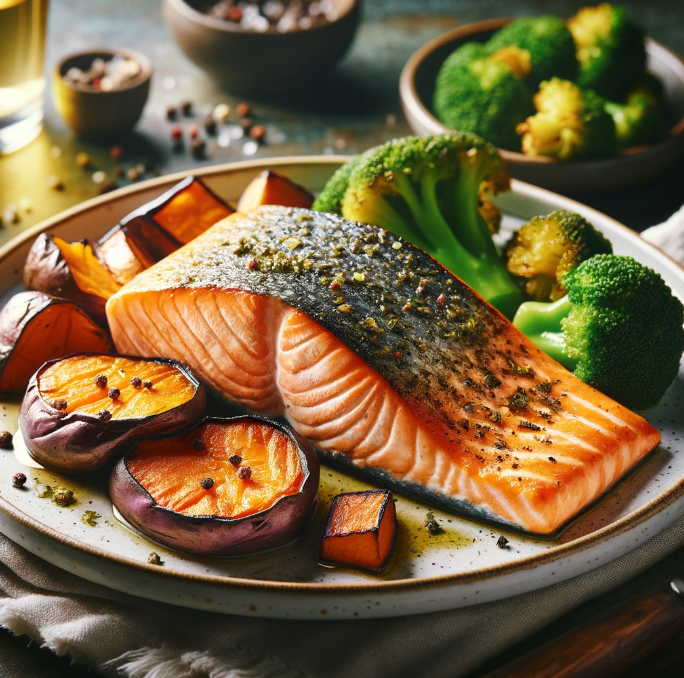

Baked Salmon with Roasted Sweet Potatoes and Steamed Broccoli
Ingredients
- 4 oz (approximately 113 g) salmon fillet
- 1/2 medium sweet potato (approximately 100 g), peeled and diced
- 1/2 cup broccoli florets
- 1 tablespoon olive oil
- 1/4 teaspoon salt
- 1/4 teaspoon black pepper
- 1/4 teaspoon dried herbs (optional, such as oregano, thyme, or rosemary)
| Nutrition Facts |
| Calories |
300 kcal |
| Protien |
30-35 g |
Meal Procedure
- Preheat your oven to 400°F (200°C).
- Toss the diced sweet potato with 1/2 tablespoon of olive oil, salt, pepper, and optional herbs. Spread them on a baking sheet in a single layer.
- Place the salmon fillet on a separate baking sheet lined with parchment paper. Drizzle with the remaining 1/2 tablespoon of olive oil and season with salt and pepper.
- Place both the sweet potato and salmon in the preheated oven.
- Steam the broccoli florets for 5-7 minutes, or until tender-crisp. You can use a steamer basket, a pan with a small amount of water, or a microwave steamer.
- Bake the salmon for 10-12 minutes, or until cooked through (flaky flesh when tested with a fork). The sweet potatoes will take about 20-25 minutes to become tender.
- Once cooked, remove the salmon and sweet potatoes from the oven and assemble your plate with the steamed broccoli.